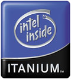
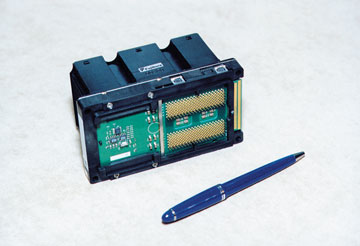
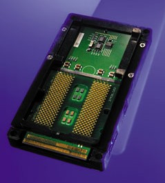

Андрей Борзенко
Borz@bytemag.ru
В конце мая корпорация Intel (http://www.intel.com) сообщила о том, что в течение ближайшего месяца производители компьютеров намерены представить первые серверы и рабочие станции на базе процессоров Itanium. Ожидается, что в этом году около 25 компаний выпустят более 35 таких моделей, а сотни поставщиков оборудования и программного обеспечения предложат продукты, работающие с данными системами. IDC прогнозирует, что в этом году будет продано 26 тыс. систем на базе Itanium, а к 2004 году их число возрастет до 540 тыс. Иными словами, сообщение Intel означало, что начался промышленный выпуск нового процессора корпорации.
Системы на основе процессоров Itanium будут поддерживаться четырьмя ОС, включая платформу Microsoft Windows (64-разрядную версию для рабочих станций - 64-bit Edition и 64-разрядную версию для серверов - 64-bit Windows Advanced Server Limited Edition 2002); HP-UX 11i v1.5 компании Hewlett-Packard, AIX-5L корпорации IBM и Linux. 64-разрядные версии последней планируют поставлять компании Caldera International, Red Hat, SuSE Linux и Turbolinux. Уже анонсировано более 500 приложений, которые предполагается портировать для архитектуры Itanium.
Буквально в день объявления Itanium о выпуске систем на его основе заявили несколько крупных компаний, в числе которых Bull, Compaq, Dell, Fujitsu-Siemens, Hewlett-Packard, IBM, NEC, SGI и Unisys. В частности, IBM анонсировала рабочую станцию IntelliStation Z Pro и сервер X380, Dell - четырехпроцессорный сервер PowerEdge 7150 и рабочую станцию Precision Workstation 730, Bull - 4- и 16-процессорные модели серверов Escala IL. Особо хотелось бы отметить системы, представленные Hewlett-Packard: двухпроцессорную рабочую станцию HP Workstation i2000 и 4- и 16-процессорные серверы HP Server rx4610 и HP Server rx9610. В настоящее время HP-UX - единственная 64-разрядная система UNIX, обеспечивающая переносимость на уровне двоичного кода программных приложений заказчиков при переходе c RISC (Reduced Instruction Set Computing) на архитектуру Itanium. HP-UX оптимизирована с тем, чтобы обеспечить высокий уровень производительности, масштабируемости и надежности. Кроме того, сейчас Hewlett-Packard - единственный производитель компьютеров на платформе RISC, чью технику можно перевести на платформу Itanium без повторной компиляции приложений и ПО. А дело здесь в следующем.
Путь процессоров Itanium к потребителю в Intel обычно делят на шесть этапов: завоевание поддержки отрасли, выпуск прототипов для партнеров, выпуск прототипов для разработчиков, выпуск пилотных систем, платформы и, наконец, массовое внедрение решений. Известно, что для тестирования и разработки производителям компьютеров и пользователям было поставлено более 6500 систем. Первый этап этого пути датируется ноябрем 1997 года. Однако хотелось бы напомнить, что история Itanium началась значительно раньше.
Merced, он же Itanium
Еще в июне 1994 г. компании Intel и Hewlett-Packard (http://www.hp.com) подписали соглашение о совместной разработке новой 64-разрядной архитектуры, ориентированной на применение в серверах и рабочих станциях. Преимущества микропроцессоров с большей разрядностью очевидны. Они позволяют адресовать больший объем памяти, дают возможность оперировать с большим диапазоном чисел, повышают эффективность параллельных и матричных вычислений и т.д. Заметим, что еще в 1983 г. в Hewlett-Packard было принято решение начать проект объединения различных процессоров и ОС, используемых в трех компьютерных линейках (HP1000, HP3000 и HP9000). Результаты этого решения сегодня хорошо известны: это семейство процессоров PA-RISC (Precision Architecture Reduced Instruction Set Computing) и ОС UP-UX, которые совместно применяются в высокопроизводительных рабочих станциях и Unix-серверах (N-, V-, L- и A-класса). Первый компьютер на базе PA-RISC был представлен еще в 1985 г. Исследования и разработки ведутся в лаборатории микропроцессоров, которая входит в подразделение System VLSI Technology Operation. В 1989 г. в поисках нового, наследующего PA-RISC решения Нewlett-Packard приступила к разработке архитектуры EPIC (Explicitly Parallel Instruction Computing), впоследствии переименованной в WideWorld Architecture, а затем SuperParallel Processor Architecture (SP-PA). Но в 1993 г., когда эта 64-разрядная архитектура была практически готова, руководители проекта поняли, что компании одной не вынести огромных расходов на разработку и изготовление нового процессора. Тогда в Нewlett-Рackard впервые рассмотрели возможность привлечь к созданию высокопроизводительного процессора другую компанию.
К 1994 г. корпорация Intel, имеющая огромный опыт в области микропроцессоров, испытывала определенные трудности. Продолжавшаяся два года разработка 64-разрядной архитектуры Р7 натолкнулась на серьезные трудности. Впоследствии Intel отказалась от Р7 в пользу EPIC, хотя справедливости ради стоит отметить, что некоторые особенности Р7 реализованы в Itanium.
К предложению HP работать сообща в Intel отнеслись с большим энтузиазмом. Ведь открывалась реальная возможность заполучить масштабируемую ОС корпоративного уровня HP-UX, которую можно будет реализовать на новой платформе. В совместном контракте Нewlett-Рackard пришлось пойти на крупные уступки. Корпорация согласилась на то, что Intel будет принимать все конструктивные решения по новому процессору, даже те, которые затрагивают архитектуру EPIC, разработанную инженерами Нewlett-Рackard. Кстати, новый процессор получил название Merced в честь реки в Калифорнии.
Два года спустя, когда выяснилось, что мощности Merced недостаточно, чтобы при использовании HP-UX обойти архитектуру PA-RISC, в Нewlett-Рackard решили самостоятельно создавать новый процессор на том же фундаменте, что и Merced, но с иной реализацией внутренних функциональных блоков. Когда об этом проекте узнали в Intel, начались переговоры о распространении партнерства, которое первоначально ограничивалось созданием только процессора Merced, на 64-разрядную архитектуру в целом, с тем чтобы включить в соглашение и новый кристалл. Так Merced, в свое время рассматриваемый в качестве потенциального могильщика RISC-архитектуры, превратился в промежуточную ступеньку. Поскольку подписанное соглашение не имело жесткого срока, обе компании без труда расширили свое сотрудничество уже над новым 64-разрядным процессором McKinley (так называется высочайшая гора в Северной Америке). Кстати, первоначально предполагалось, что системы Merced появятся в 1997 или 1998 г. Но скоро только сказка сказывается.
Важность успеха Intel и НР в деле создания мощной 64-разрядной платформы для компьютерной индустрии невозможно переоценить. Свои ставки здесь есть у каждого. Почти все фирмы-производители компьютеров создают новые системы, а все разработчики ОС UNIX планируют перенести свои версии на новую платформу. Аналитики уверены, что Itanium заставит компании, выпускающие серверы и рабочие станции RISC/Unix, пересмотреть свой модельный ряд. Однако на очень широкий выбор компьютеров Itanium рассчитывать не приходится. Процессор разрабатывался слишком долго, к тому же с середины 1999 г. разработка то и дело наталкивалась на препятствия. В результате большинство компаний сосредоточилось на создании компьютеров на базе McKinley.
Неудивительно, что выпуск Merced неоднократно задерживался, если учесть, что два гиганта индустрии преследовали общую цель, но использовали совершенно разные тактические подходы. Некоторые эксперты тогда утверждали, что компании оказались партнерами поневоле: их свели внешние силы рынка, разрабатываемые изделия и финансовые трудности, которые они решили преодолевать вместе.
Intel рассматривает Itanium в качестве родоначальника нового семейства процессоров, которое будет развиваться в ближайшие 25 лет. За первой моделью с кодовым названием Merced последуют McKinley, Madison, Deerfield и другие новые версии. По официальным данным, шесть моделей подобных кристаллов уже находятся на стадии разработки. Опытные партии процессора McKinley планируется выпустить в конце текущего года, а первые системы на его основе должны появиться в 2002 г. Ожидается, что этот процессор дебютирует с тактовой частотой в 1 ГГц или выше. По имеющейся информации, все 64-разрядные процессоры Intel будут содержать в своем названии слово Itanium, а McKinley, Madison и прочие имена так и останутся кодовыми названиями. Таким образом, скорее всего официально анонсированы будут Itanium II, Itanium III и т. д.
Только через три года после подписания соглашения, в ноябре 1997 г. Intel и Hewlett-Packard представили архитектуру будущего процессора и планы разработки целого семейства IA-64 (Intel Architecture). Не полагаясь только на собственные ресурсы, в мае 1999 г. Intel объявила о создании инвестиционного фонда, получившего название Intel 64 Fund с капиталом 250 млн. долл. Эти средства должны были быть направлены на инвестиционную поддержку компаний, занимающихся разработкой Интернет-приложений и ПО уровня предприятий. В создании фонда, помимо Intel и Hewlett-Packard, приняли участие 16 компаний и организаций. Среди них не только компьютерные фирмы - Compaq, Dell, SGI, но и Reuters, Ford Motor Company, General Electric, Bank of America. На сегодняшний день более 150 млн. долл. инвестировано более чем в 40 компаний, работающих в сфере инфраструктуры Интернет, электронной торговли, производства и финансов на вертикальных рынках.
Тогда же, в 1997 г., Intel и Hewlett-Packard представили архитектуру и набор команд IA-64. В августе 1999 г. впервые появились опытные образцы процессора, а осенью Intel представила Itanium как коммерческое наименование своего первого 64-разрядного процессора, дотоле носившего рабочее название Merced. Введены были термины "семейство процессоров Itanium" (IPF, Itanium Processor Family) и "архитектура Itanium" (Itanium Architecture). Через год, в октябре 2000 г. появились пилотные образцы систем на основе Itanium. Примерно в то же время прошло второе промышленное тестирование программ и оборудования на платформе Itanium. Приоритетной задачей этого мероприятия было жесткое тестирование платформы перед пилотным выпуском, причем в программу тестирования входила проверка работы в сети и обеспечение телекоммуникаций. На территории Caesar's Palace площадью 34 тыс. кв. футов, где проходило тестирование, было проложено более 3 миль кабеля, более ста 20-амперных силовых линий, установлены хранилища данных суммарной емкостью более 2 Тбайт. Активно проводились и другие мероприятия, включая широкое распространение ключевой технической информации и средств разработки, а также поставку более 6000 прототипов серверов, как в одно-, так и в многопроцессорной конфигурации. Кроме того, Intel открыла в разных странах мира более 30 центров разработки приложений, где инженеры Intel и разработчики программного и аппаратного обеспечения совместно работали над оптимизацией прикладных программ под системы на основе Itanium.
Особенности архитектуры
По мнению представителей Intel, архитектура процессора Itanium - это самая значительная разработка со времени презентации 386-го процессора в 1985 г. Первые образцы 64-разрядного процессора Intel представляют собой картридж размером примерно 10х6 см, который включает в себя кэш-память третьего уровня емкостью 2 либо 4 Мбайт и радиатор. Картридж монтируется в разъем типа Slot и имеет 418 выводов. Процессор имеет трехуровневую иерархию сверхоперативной памяти. Если кэш-память первого и второго уровней интегрирована на кристалле процессора, то микросхемы кэш-памяти третьего уровня расположены на самой плате картриджа. На реализацию процессора с соблюдением проектных норм 0,18 мкм потребовалось около 320 млн. транзисторов, из которых только 25 млн. пришлось на реализацию самого ядра, а остальные - на кэш-память. Самый большой модуль процессора - это блок вычислений с плавающей запятой, он занимает около 10% площади кристалла. Производительность Itanium составляет до 6,4 млрд. операций с плавающей запятой в секунду. Благодаря архитектуре EPIC и 15 исполнительным устройствам процессор может выполнять до 20 операций одновременно. При этом он может непосредственно адресовать до 16 Тбайт памяти при пропускной способности до 2,1 Гбайт/с. В процессоре реализована поддержка всех расширений Intel (технологий MMX, SIMD и симметричной мультипроцессорной обработки), за исключением SSE2.
|  | Архитектура IA-64.
|
Одна из самых интересных деталей в плане размещения узлов процессора - это система синхронизации работы узлов. Одновременная передача тактовых импульсов при большой площади процессора представляет сложную задачу для разработчиков, поскольку задержки в распространении импульсов тактового генератора могут вызывать рассинхронизацию узлов. Для этой цели по всей площади кристалла разместили большое число точек распространения тактовых импульсов.
Архитектура Itanium включает такие уникальные средства повышения надежности, как система расширенного самоконтроля EMCA (Enhanced Machine Check Architecture), обеспечивающая обнаружение, коррекцию и протоколирование ошибок, а также поддержку обработки кода ECC (Error Correcting Code) и контроля четности.
Для двух- и четырехпроцессорных систем Intel выпустила специальный набор микросхем Intel 460GX, которые могут включаться каскадно, увеличивая число одновременно используемых процессоров. Поскольку конфигурация таких систем изначально предусматривает объемы оперативной памяти в несколько гигабайт, то в системах Itanium применяются сравнительно недорогие микросхемы памяти типа SDRAM. При этом для увеличения производительности, по словам представителей Intel, используются такие методы, как буферирование, чередование и деление памяти на несколько банков. Набор микросхем реально поддерживает работу с 64 Гбайт памяти при максимальной пропускной способности 4,2 Гбайт/с, хотя 64-разрядная адресация памяти теоретически позволяет обращаться к гораздо большему количеству адресов.
Процессоры Itanium будут работать на тактовой частоте 800 или 733 МГц, а их стоимость в зависимости от объема кэш-памяти составит от 1177 до 4227 долл.
|  | Архитектура IA-64.
|
Современные тенденции развития микропроцессоров связаны с выполнением большего числа команд за один такт. Разработчики IA-64 полагают, что добиваться более высокого уровня суперскалярности (распараллеливания) в процессоре можно, только если отказаться от обычных последовательных кодов и ввести параллелизм прямо на уровень системы команд. В этом случае задача распараллеливания ложится не на аппаратуру процессора, а на компилятор. Как уже отмечалось, в основе IA-64 лежит технология EPIC, главная идея которой - введение явного параллелизма. Преимущества такого подхода понятны. В схемотехнических решениях процессоров исчезает сложная логика, отвечающая за внеочередное суперскалярное выполнение команд, и можно отвести больше места на кристалле под кэш-память, файл регистров и исполнительные устройства. Однако, с другой стороны, возникает необходимость разрабатывать сложные и эффективно распараллеливающие компиляторы.
Несомненно, что между технологиями EPIC и VLIW (Very Long Instruction Word) много общего. VLIW обычно рассматривают как статическую суперскалярную архитектуру. Имеется в виду, что распараллеливание кода происходит на этапе компиляции, а не динамически во время исполнения. Иными словами, в машинном коде VLIW присутствует явный параллелизм. В свою очередь, к основным особенностям EPIC относят:
- большое количество регистров,
- масштабируемость архитектуры до большого количества исполнительных функциональных устройств,
- параллелизм в машинном коде,
- предсказание ветвлений (предикацию),
- спекулятивное выполнение (загрузку по предположению).
Основная особенность EPIC та же, что и у VLIW, - распараллеливанием потока команд занимается компилятор, а не процессор. Достоинства данного подхода заключаются в том, что упрощается архитектура процессора, причем он не тратит время на анализ потока команд. Кроме того, в отличие от процессора компилятор способен проводить анализ по всей программе, а не по сравнительно небольшому ее участку. Поскольку практически любая программа должна запускаться многократно, выгоднее распараллелить ее один раз (при компиляции), а не каждый раз, когда она исполняется на процессоре.
В архитектуре Itanium насчитывается по 128 64-разрядных целочисленных регистров общего назначения и 80-разрядных регистров вещественной арифметики, а также 64 одноpазpядных пpедикатных pегистpа. Все они доступны для программирования; кроме того, имеется множество недоступных внутренних служебных регистров, используемых самим процессором. 64 одноразрядных регистра используются для организации логики предсказания ветвления и выполнения команд в порядке, отличном от последовательного.
Для достижения явного параллелизма в формат команд IA-64 введены дополнительные разряды маски, которые явно указывают на зависимости между командами. До сих пор задача определения таких зависимостей полностью ложилась на аппаратуру процессора. Здесь же вводится понятие групп команд. Все они независимы, и их следует выдавать на выполнение в разные исполнительные устройства. Разряды маски указывают на зависимости не только внутри нескольких команд, но и между группами команд. По три команды IA-64 объединяются в так называемую связку, имеющую емкость 128 разрядов. Связка содержит три команды и шаблон, в котором указано, какие есть зависимости между командами (например, можно ли с первой командой запустить параллельно вторую или же она должна выполниться только после первой и т.п.).
В современных процессорах активно используются методики предсказания ветвлений и спекулятивного выполнения. Однако в существующих на сегодня моделях очень много времени уходит на вычисление ветвей программы, которые впоследствии не используются. Другое дело Itanium. Если в исходной программе встречается условное ветвление, то команды из разных ветвей помечаются разными предикатными регистрами (команды имеют для этого предикатные поля); далее они выполняются совместно, но их результаты не записываются, пока значения предикатных регистров не определены. Когда, наконец, вычисляется условие ветвления, предикатный регистр, соответствующий правильной ветви, устанавливается в 1, а другой - в 0. Перед записью результатов процессор проверяет предикатное поле и записывает результаты только тех команд, предикатное поле которых содержит предикатный разряд, установленный в единицу.
Еще одна особенность архитектуры Itanium - предсказание и исполнение по предположению. Этот механизм должен снизить простои процессора, связанные с ожиданием выполнения команд загрузки из относительно медленной основной памяти. Компилятор перемещает команды загрузки данных из памяти так, чтобы они выполнились как можно раньше. Следовательно, когда данные из памяти понадобятся какой-либо команде, процессор не будет простаивать. Перемещенные таким образом инструкции называются командами загрузки по предположению и помечаются особым образом. А непосредственно перед командой, использующей загружаемые по предположению данные, компилятор вставит команду проверки предположения. Если при выполнении загрузки по предположению возникнет исключительная ситуация, процессор сгенерирует исключение только тогда, когда встретит команду проверки предположения. Если, например, команда загрузки выносится из ветвления, а ветвь, из которой она вынесена, не запускается, то возникшая исключительная ситуация игнорируется.
С выходом Itanium сравнение процессоров по частоте практически теряет смысл. Теперь придется применять новые методики, учитывающие не только количество реально выполненных за один такт инструкций, но и качество анализа компилятором исполняемой программы, поскольку результирующая производительность будет сильно зависеть от этого (процессор ведь может работать с огромной скоростью, вычисляя ненужные ветви программы).
Расширение x86
По заявлению разработчиков, Itanium полностью совместим с современными 32-разрядными приложениями. Однако вряд ли эти программы будут работать на 64-разрядном кристалле быстрее. Более того, как полагают некоторые специалисты, возможно, придется привыкать и к более медленным темпам. Зато новые, специализированные приложения оставят всех позади. Например, уже на этапе опытного производства кристаллов архитектура процессора Itanium продемонстрировала высокое быстродействие алгоритмов защиты информации, интенсивно использующих вычислительные мощности.
Второй по величине производитель микропроцессоров с архитектурой x86 - корпорация AMD (http://www.amd.com) тоже обнародовала свои планы создания 64-разрядных кристаллов. Однако в отличие от конкурентов она избрала эволюционный путь: добавила 32 разряда к уже имеющимся 32. Теперь регистры расширились до 64 разрядов, появились команды манипуляции с 64-разрядными данными, да и шина адреса увеличилась до 64 разрядов. В итоге родилась архитектура x86-64. Первоначально подобный процессор был назван "кувалдой" (Sledgehammer). Команды нового кристалла отличаются от команд процессоров x86 только наличием префикса, указывающего на их разрядность.
Кроме шестнадцати регистров общего назначения, имеются восемь 64-разрядных регистров для операций вещественной арифметики. Первые восемь регистров "кувалды" даже обозначаются названиями, отражающими их x86-происхождение: RAX, RBX, RCX, RDX, RSP, RBP, RSI, RDI. Так, восемь младших разрядов RAX фактически эквивалентны регистру A (аккумулятору) процессора i8080 и регистру AL i8086. Разряды 8-15 эквивалентны регистру AH i8086. Объединение этих двух полей представляет регистр AX i8086. Битовое поле 0-31 - полный эквивалент регистра EAX в 32-разрядных 80x86. Дополняют архитектуру нового процессора шестнадцать 128-разрядных регистров для хранения операндов SIMD-инструкций.
Обеспечена полная аппаратная поддержка выполнения инструкций x86-32 на уровне ядра. В отличие от процессора Itanium, здесь должна обеспечиваться полноценная реализация 8-, 16- и 32-разрядных приложений без потери производительности. Таким образом, на одном процессоре смогут одновременно и независимо работать 16- и 32-разрядные приложения. Это должно сделать переход пользователей на новую платформу безболезненным. Процессоры смогут работать в двух режимах - Long и Legacy Mode. В первом кристалл будет работать как x86-64, а во втором - как x86-процессор, совместимый с 16- и 32-разрядными приложениями и поддерживающий расширение SSE.
Планируется выпустить две модели 64-разрядного микропроцессора: собственно Sledgehammer и младшую модель - Clawhammer. Их отличия состоят главным образом в размере кэш-памяти второго уровня. Clawhammer позиционируется как процессор для рабочих станций и будет поддерживать двухпроцессорные системы. Причем размер кристалла не должен превысить 100 кв. мм, что сделает его в достаточной мере дешевым. Sledgehammer, как планируется, будет поддерживать до восьми процессоров.
Процессоры будут содержать интегрированный контроллер памяти, совместимый с технологией HyperTransport. Это позволит напрямую работать с системной памятью, минуя системную шину и набор микросхем. Для возможности обращения к одному и тому же сегменту памяти в мультипроцессорных системах будет использоваться архитектура NUMA (Non-Uniform Memory Access). Каждому процессору будет отведен отдельный сегмент памяти, но при необходимости будет доступен и сегмент памяти другого процессора. AMD разрабатывает два набора микросхем с поддержкой HyperTransport. Первый чипсет Golem предназначен для серверов и оснащен мостом HyperTransport-PCI-X, а второй, Lokar для рабочих станций, имеет встроенную поддержку интерфейса AGP 8X и мост HyperTransport-AGP. Новые процессоры будут изготавливаться с учетом проектных норм 0,13 мкм и технологии SOI (Silicon On Insulator - "кремний на изоляторе"). Поскольку массовое производство кристаллов начнется не ранее 2002 г., говорить о конкуренции между семействами Itanium и Hammer пока преждевременно.